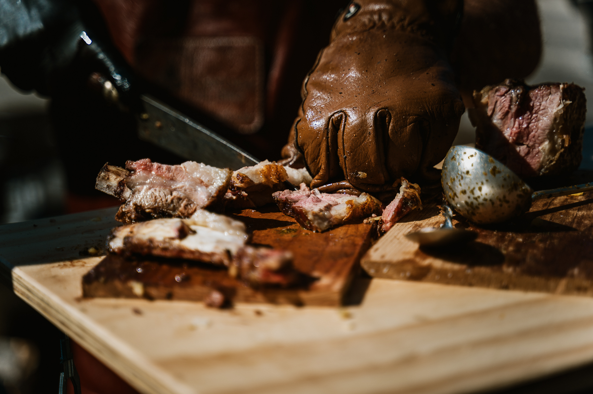
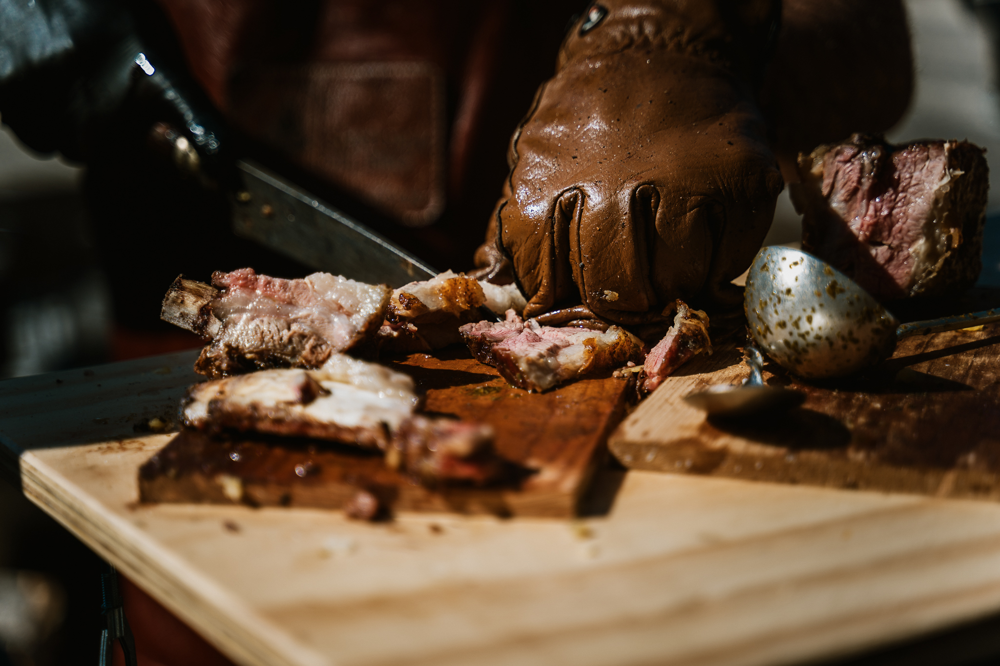

La mia Storia
Guido Asados, il cui vero nome è Guido Gaston Russo, è un argentino trapiantato a Lucca da più di vent’anni. Dal suo arrivo in Italia nel 2002, Guido ha lavorato come macellaio, un mestiere che lo ha avvicinato profondamente alla cultura della carne ed alla sua preparazione. Grazie alle sue radici ed alla sua passione per la brace si è specializzato nella cottura di carne alla griglia, divenendo un vero e proprio esperto, o come lui ama definirsi, un “Amante della brace”. Tra le sue specialità spicca l’asado, un metodo di cottura tradizionale argentino che rappresenta molto più di una tecnica culinaria: è un rito conviviale e culturale, un momento di condivisione che unisce famiglie e amici attorno al fuoco. L’asado prevede una cottura lenta della carne su una griglia o su un’apposita struttura a croce (cruz), dove il calore della brace conferisce sapore e tenerezza unici. Per Guido, l’asado è il cuore della tradizione gastronomica argentina, un’eredità ches trasmette attraverso i suoi eventi, offrendo ai partecipanti un’esperienza autentica e coinvolgente.